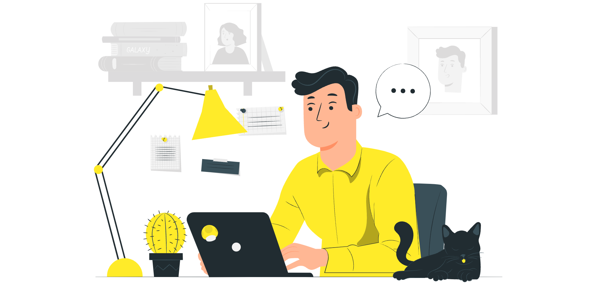

Home Page
Benvenuto nel mondo dell'arte digitale e della creatività logica! Se sei appassionato di tecnologia e desideri imparare a creare software che possano cambiare il mondo, sei nel posto giusto. Qui, alla nostra community di programmatori, ti offriamo le risorse, le guide e il supporto necessari per sviluppare le tue abilità nel campo della programmazione. Che tu sia un principiante curioso o un esperto del codice alla ricerca di nuove sfide, troverai ciò di cui hai bisogno per crescere e prosperare. Dalle basi della programmazione fino alle tecniche avanzate, esplora un vasto assortimento di linguaggi, strumenti e concetti. Che tu sia interessato allo sviluppo di applicazioni web, software desktop, app mobili o sistemi embedded, c'è un percorso di apprendimento su misura per te. Unisciti a noi nella nostra missione di rendere l'arte della programmazione accessibile a tutti. Insieme, possiamo trasformare le tue idee in realtà digitali e ispirare il prossimo capitolo dell'innovazione tecnologica. Preparati a sbloccare il potenziale del codice e a dare vita alle tue visioni. Il futuro è nelle tue mani, e noi siamo qui per guidarti lungo il cammino.
Corsi per programmare siti web
Principiante-video
Entra nel mondo della programmazione con fiducia! Il nostro corso per principianti ti offre una panoramica completa dei fondamenti della programmazione, utilizzando linguaggi di programmazione accessibili come Python. Impara a pensare in modo logico, risolvere problemi e scrivere codice pulito fin dal primo giorno. Nessuna esperienza richiesta, solo la voglia di imparare!
Intermedio-video
Pronto per il prossimo livello? Il nostro corso intermedio ti guiderà attraverso concetti avanzati come strutture dati, algoritmi complessi e programmazione orientata agli oggetti. Preparati a superare sfide pratiche e a scrivere codice professionale di alta qualità. Se sei pronto a portare le tue abilità al livello successivo, questo corso è per te!
Esperto-video
Sei un esperto pronto a raggiungere nuove vette? Il nostro corso avanzato ti porterà oltre i limiti della programmazione, esplorando argomenti come ottimizzazione del codice, architetture software avanzate e sviluppo su larga scala. Affronta sfide complesse e impara dalle migliori pratiche del settore. Preparati a diventare un vero maestro della programmazione.